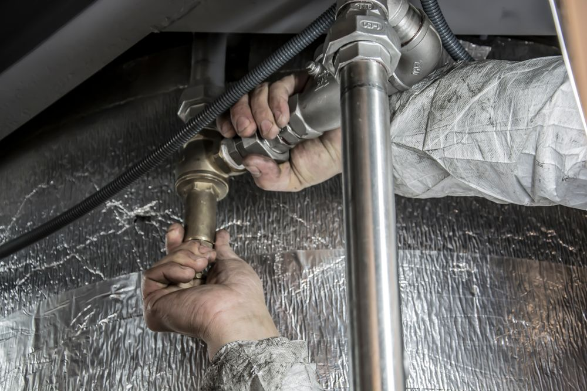

Aperto 24 ore (da Google Maps)
Perdita d'acqua? Chiama subito.
Pronto intervento idraulico a Messina: guasti, rubinetti, lavelli, scaldabagni. Pagamento in contanti.
📞 Chiama ora
4,8 su Google · 28 recensioni →
Numero: 334 596 1692

Di cosa ci occupiamo
I lavori per cui i clienti ci hanno scelto, secondo le recensioni su Google. Google Maps indica anche "servizi di riparazione".
- Guasto urgente al tubo di ingresso dell'acquaIntervento di emergenza
- Riparazione di lavello e rubinetti della cucinaAnche per piccole riparazioni rapide
- Sostituzione dello scaldabagnoSostituzione di scaldabagni
- Collegamento e sigillatura di una cucina nuovaAllacci idraulici
Cosa dicono i clienti su Google
4,8 su 28 recensioni, leggile su Google Maps ↗
Presenti anche in emergenza
Rapidi a rispondere e a intervenire, anche la sera e in giorni di festa.
Onesti, prezzi giusti
Prezzi equi per una riparazione veloce, descritti come rari in questo mestiere.
Competenti e cortesi
Spiegano il lavoro che fanno.
Come ci trovi
- OrariAperto 24 ore
- IndirizzoVia Giacomo Fiore 10, 98122 Messina
- Telefono334 596 1692
Orari e indirizzo da Google Maps.
Pagamento in contanti.

Preferisci prepararti prima di chiamare?
Scrivi zona e problema: ti mostriamo un riepilogo da leggere al telefono. Non viene inviato niente: parte una chiamata.